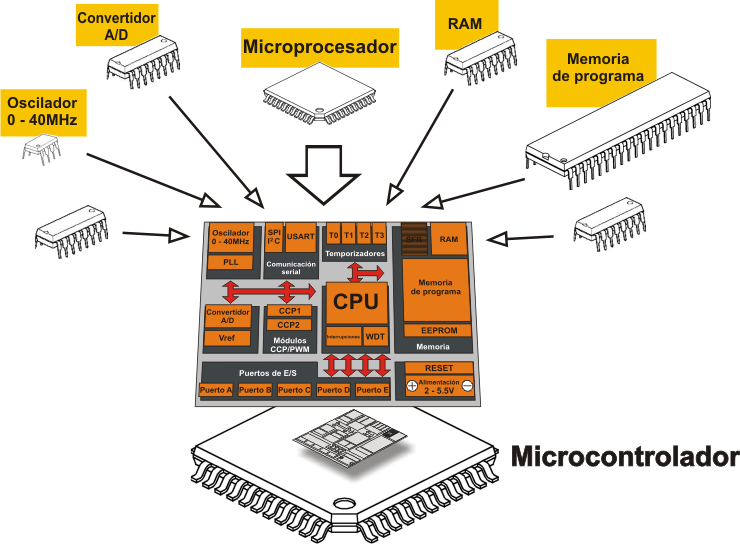

Un procesador, incluye tanto registros visibles por el usuario como registros de
control/estado. Los registros visibles por el usuario pueden ser de uso general o
tener una utilidad especial, mientras que los registros de control y estado se usan
para controlar el funcionamiento del procesador, un claro ejemplo es el contador de programa.
Lleva a cabo una gran variedad de:
Como respuesta a las peticiones de los programas que están siendo ejecutados en memoria.
La CPU controla las operaciones básicas del ordenador enviando y recibiendo señales de
control, direcciones de memoria y datos de un lugar a otro de la computadora a través de
un grupo de canales llamados BUS.
A continuación se muestra cómo se organiza un procesador, para esto se
tiene que considerar los siguientes requisitos:
Captar instrucciones: el procesador lee una instrucción de memoria
(registro, cache o memoria principal).
Interpretar instrucción: la instrucción se codifica para
determinar qué acción es necesario.
Captar datos: la ejecución de una instrucción puede exigir leer
datos de memoria o de un módulo de E/S.
Procesar datos: la ejecución de una instrucción puede exigir llevar
a cabo alguna operación aritmética o lógica con los datos.
Escribir datos: los resultados de una ejecuci&oacen exigir escribir datos en
la memoria o en el módulo de E/S.
Para hacer estas cosas, el procesador necesita almacenar instrucciones y datos
temporalmente mientras una instrucción está ejecutándose,
en otras palabras el procesador necesita una pequeña memoria interna, también
llamados registros.
